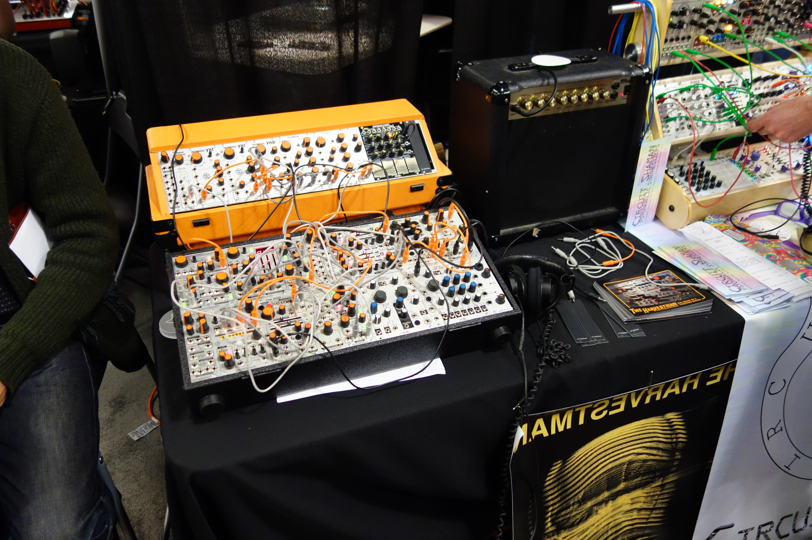
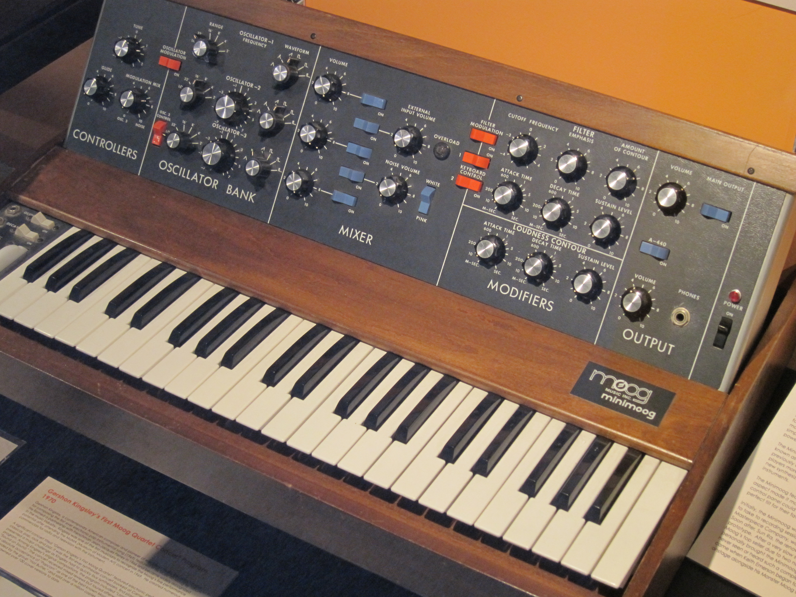
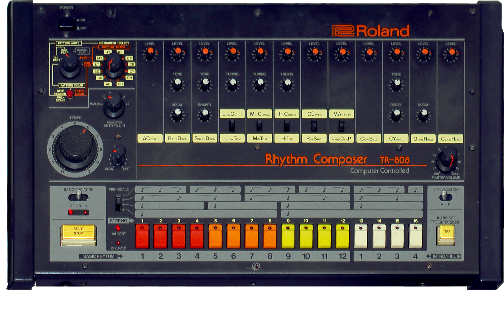
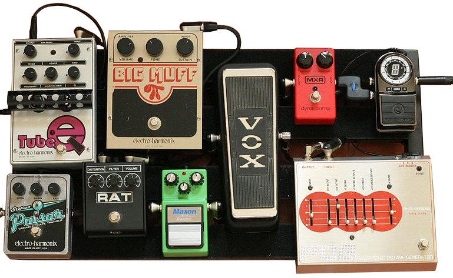

MEDIAART 2G03: Synthesis Overview
The basic idea of synthesis is that we're going to generate sound signals directly from mathematical, mechanical, or electrical components, instead of recording those sound signals with a microphone. The word synthesis in a very general sense means to put together. And when we're doing sound synthesis, as we'll see, this involves putting together, or “connecting”, some number of small devices that produce or transform audio signals.
Analog synthesis
When people talk about synthesis, they may be talking about the long history of what is sometimes called analog synthesis. The next few points talk a little bit about some of the different forms that analog synthesis has taken.

Above is a picture of a modular synthesizer. And it's called a modular synthesizer because if we look closely, we can see that each of these parts of this synthesizer are actually separate little blocks that are screwed into a rack. Each one of these units does a different thing. Each one has some controls on it. And each one has some “jacks” or “connectors” where we can get audio signals or input audio signals into other modules by connecting them with these colorful “patch cables”. This is a way of doing synthesis that has been around for many decades, and is experiencing something of a resurgence in our current moment. People are making new modules for modular synthesis and selling them, and people are getting quite into and quite good at making interesting sounds, making their own unique combinations of these modules that produce interesting sounds.

Probably when we think of the word synthesizer though, we're likely to think of something like the image above of a “mini Moog synthesizer” [image above]. And in some sense, what this represents is a standardization of this modular synthesis idea. Now there's a standard set of modules that have been put together in a single prefabricated package, with no patch cables. And a keyboard has been added to make it possible to play melodies and that kind of thing with the synthesizer. So this was an innovation that happened in the history of synthesizers around the 1970s, and it was so successful that for many people the word synthesizer has come to mean something just like this, with a keyboard interface.

At around the same time, perhaps a little bit later, we started seeing programmable drum machines like this Roland 808 [image above]. What it has inside of it are 12 synthesizer circuits where electronic components are connected in such a way that they can make audio signals that are meant to emulate the sound of a bass drum or a kick drum or a snare, etc. And then the TR 808, has a “sequencer” interface on it, a drum programming interface (in other words), so that people could set up particular patterns of beats with the underlying synthesizers.

Another form that analog synthesis takes (and I think here I'm straying off the beaten path into something that fewer people would “usually” call synthesis)… is the practice that electric guitarists have of putting their signal from their guitar through long chains of effects pedals. Somewhere out of the frame of the image above, a guitarist is playing their electric guitar and there's a cable coming from the guitar into one of these pedals. And then there's a cable going from that pedal into the next one, and from that one into the next one, and from that one into the next one, and so on and so forth. And at the end of that long chain of pedals, there will be a cable that takes that very much altered sound signal and sends it to an amplifier or a recording interface or something like that. In the case of the guitarist with their guitar pedal board, the sound is still starting with a “real acoustic instrument” and the little electric pickup on the electric guitar. But then it goes through this long chain of transformations. And I think that that really makes such “guitar effects” another form of analog synthesis. Indeed, in some cases, we could use these guitar pedals together with the other devices (discussed above) to make hybrid synthesizers of different kinds.
Software synthesis
If analog synthesis is cool, nonetheless, it's much more likely that what we're going to do is what's called software synthesis. And that's when we put together sounds from smaller mathematical, mechanical, electrical components that are running in software or simulated in software, instead of using a large, bulky “real” electrical apparatus.
This has lots of advantages. Advantage number one is that relative to analog synthesis it's portable. Another advantage is that it's often much lower cost. A third advantage, and I think this will become more obvious as we start to explore synthesis and our tutorials is that software synthesis is “scalable”.
To understand what I mean by “scalable” here: If we go back to the world of analog synthesis for a second, and we want another module in our modular synthesis rack, we have to shell out more money to buy that additional module, and it then (also) takes up more space. That then is one more thing to carry to wherever we're going to use it. But in the world of software, scalability is usually just a matter of clicking somewhere or adding an extra number, a piece of code or something like that. We can have many, many, many units, many, many, many synthesis components without necessarily paying extra costs (money, space, time). So we're much more likely to explore synthesis ideas that scale across many, many instances of things when we are using software synthesis (compared to analog synthesis).
Software synthesis has become very common in our time. Some kinds of it are built-in to computer operating systems and digital audio workstations. An Apple or Windows computer has some synthesisers built into it that occasionally are used by games or other software. The Reaper Digital Audio Workstation that we're using in this class also has some built-in synthesizers that we can use. These are examples of software synthesis.
One of the things we're going to explore in this course is that programming environments are particularly useful for software synthesis. And the reason that I think they're particularly useful is because they often have more scalability than other approaches. What we'll tend to see in programming environments is that if we want 10 of something or 20 or something, or 50 of something, there's usually not a lot of obstacles in our way to having that kind of scalability.
Applications of synthesis
Let's briefly think about some of the applications of synthesis.
As we've seen earlier, one of the things that synthesizers have been used for is “simulating”. It's simulating other instruments, simulating drums, simulating keyboard instruments. Such simulation of sound might also be used to create sounds that address the ear in ways traditional physical instruments cannot. For example, the Mini-moog and the 808 drum machine that were mentioned in another module: some of the sounds that those instruments make resemble the sounds of traditional instruments, but other sounds don't. Or they have a certain relationship to traditional sounds, while also having other features that are due to their electronic nature.
The 808 in particular has become kind of like an iconic drum machine sound used in hip hop and techno and house and other genres, which certainly has to do with all of the different sounds in that machine (the sounds the 808 by itself can make). One of the things that producers found early on is that they could transform and layer the sounds of the 808 bass drum (ie. Multiple 808 bass drums) in interesting ways to make a bass drum that was particularly resonant or particularly deep or particularly thick in its sound.
Another possible application of synthesis is to making completely new instruments. And so not just making new sounds, but making new instruments around those sounds. There's a field of research called NIME (short for: new interfaces for musical expression) that focuses exactly on this possibility. If you’re going to participate in that type of research and that type of innovation, then synthesis is going to be your everyday bread and butter.
Synthesis is also particularly useful when we're making sounds for dynamic and interactive contexts. As we start to work with synthesis in other videos and tutorials, one of the things we'll see is that synthesizers usually have a large and growing number of parameters that control them. And if you're in a dynamic or interactive context like a video game, or an art installation with a bunch of sensors, then what you have in those situations is a bunch of inputs that can control things. So synthesis can be something that kind of completes the equation there. The installation or the video game has lots of inputs to things that can control things and sounds, while synthesis has lots of things that can be controlled in order to produce interesting results.
We might need to think about synthesis if what we're thinking about is making new and varied software for working with sound. The standard digital audio workstation that we work with, like Reaper, is itself built from synthesis components. So if we want to make our own digital audio workstation, or we want to think about how the digital audio workstation could be different, synthesis is going to be one of the main things that we're going to be thinking about. And I would say that studying synthesis also gives us a different appreciation and understanding of how that standard software that we work with works.
Finally, there are new fields like machine listening and music information retrieval that depend on synthesis in key ways. Machine listening is a field in which people write algorithms that are able to recognize things in audio signals automatically. And music information retrieval is a more specific subset of that, where they do machine listening specifically in order to recognize or categorize things about music. In our time, this is used on an everyday basis, for example, by big platforms to understand when or to recognize when a signal contains information that is the same as another signal and maybe as an example of a copyright infringement. There are many other ways these things are being used in our time.
In summary, synthesis has lots of applications. It's a really basic underlying universal part of studying audio. And it's also a lot of fun!